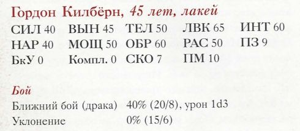
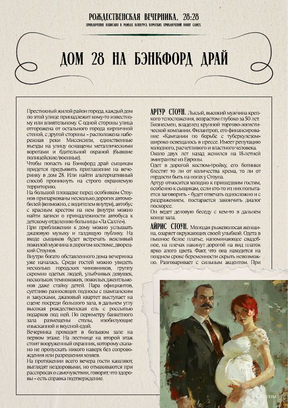
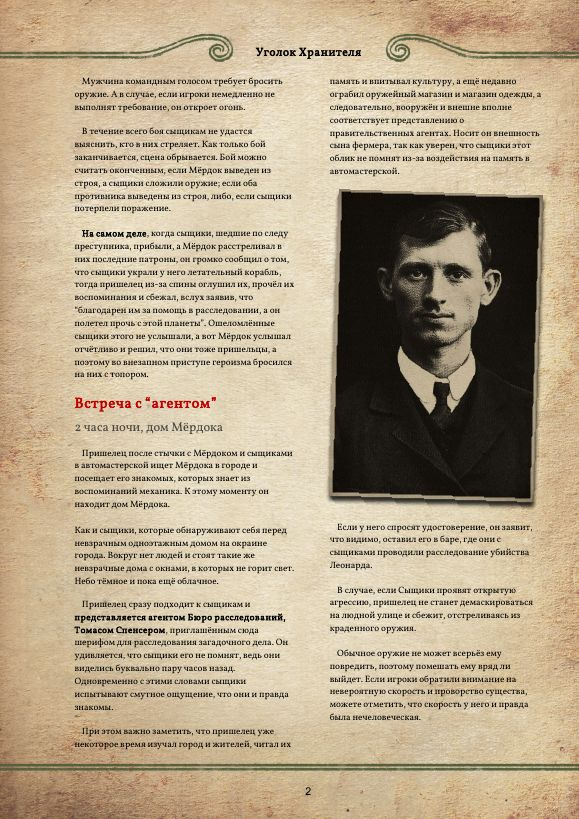
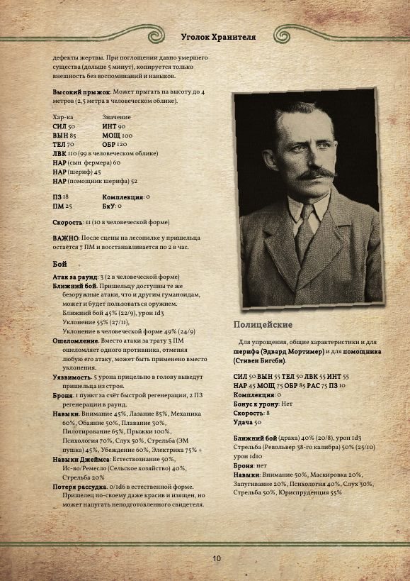
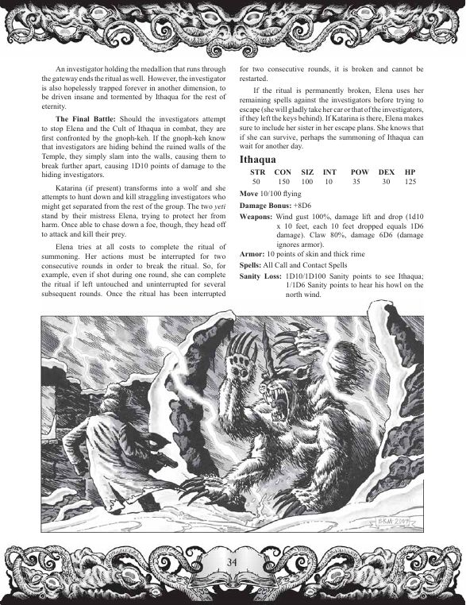
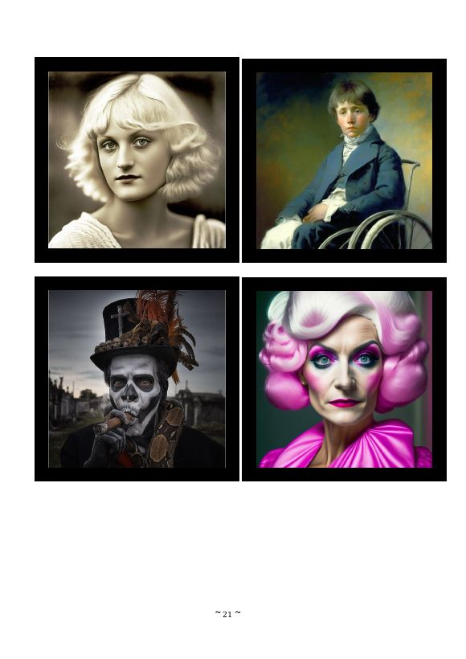
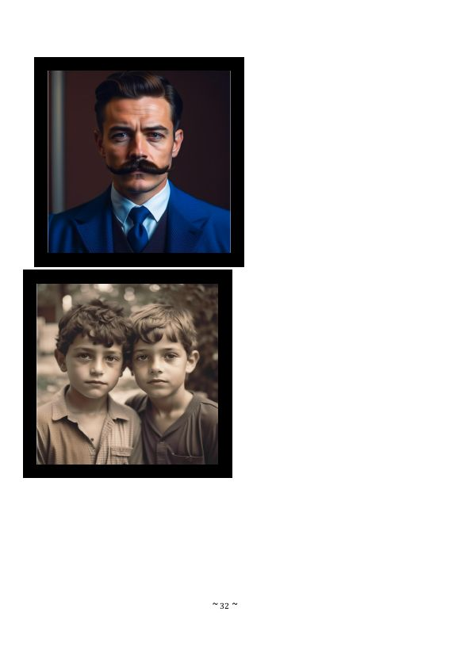

Открытые вопросы сверки сценариев
По каждому — что напечатано в книге, что сейчас в базе и что я предлагаю.
1. «Девятнадцатая лунка»: Уклонение Гордона Килбёрна
«Особняки безумия», с. 177. Напечатано: Уклонение 0% (15/6). Половина и пятая часть от 0% — это 0/0. А 15/6 — это половина и пятая часть от 30%. ЛВК у Килбёрна 65, так что по правилам базовое Уклонение — 32%. Значит, в процентах выпала цифра «3».

Сейчас в базе стоит 30%, а напечатанное «0%» сохранено в errata и corrections.
2. Английское название «Девятнадцатой лунки»
Русская книга — перевод «Mansions of Madness Vol. 1: Behind Closed Doors» (Chaosium). Английских названий в ней нет. В описаниях английского издания пять сценариев: Mister Corbitt, The Crack’d and Crook’d Manse, The Code, The House of Memphis, The Nineteenth Hole. Последний — про гольф-клуб Thistledown под ремонтом, откуда пропал владелец. Это наш «Тислдаун» и пропавший Артур Макмиллан.
name.en = «The Nineteenth Hole». Попутно можно заполнить и остальные: «Mister Corbitt», «The Crack’d and Crook’d Manse», «The Code», «The House of Memphis».3. «Рождественская вечеринка»: пара «Стоуны»
Картинка подписана «Стоуны», стоит рядом с описаниями Артура и Айрис Стоун. Айрис в тексте — молодая рыжеволосая, в положении: совпадает. Артур в тексте лысый, а на картинке — с причёской и усами.

4. «Забывающийся»: «агент» и шериф


5. «Тени Ленинграда»: Итакуа или гноф-кех?
Рисунок стоит под статблоком Итакуа. Но на нём существо с одним рогом ломает стену, за которой прячется сыщик. Текст на этой же странице: «первыми сыщиков встречают гноф-кехи… просто врезаются в стены». Рог — отличительная черта гноф-кеха; у Итакуа рогов нет.

6. «Парк развлечений»: фото без подписей
Портреты на листах раздатки, подписей нет. Без картинки в базе: Генри Дж. Перкинс (владелец, 41 год), Кэсси Фортье (26), Мэтт Донахью и Роб Дональдс (по 15 лет), Дэвин Джонс (19), Дэнни Флорес (19) и другие.

